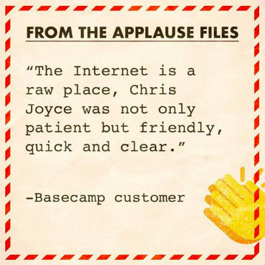

This interview is part of our series on support management, talking to senior managers who have done it before. Check out other interviews on culture, KPIs, and early team building.
Managing and leading a 15-person support team is no small feat. Doing this while everyone is working remotely, scattered all around the world, creates an entirely new set of challenges.
How do you do THAT? To find out, I interviewed Kristin Aardsma, Head of Customer Support at Basecamp.
In addition to being one of the most popular online project management tools around, the founders of Basecamp literally wrote the book on why more companies should be working remotely and how to do it effectively.
Kristin has worked at Basecamp for seven years (!!!), moving up to the role of Head of Customer Support, so she has a ton of experience in building out remote teams and aligning the experience and values of the company into a highly-effective support force.
Before we get stuck into it, quick mention that you can read more interviews like this with support leaders at Vend, 99designs, and Zendesk. We cover many of the same topics, and it’s exciting to see all the progress everyone is making across different industries!
And on that note, read on!
Ok - so, first up: what is Basecamp?
Sure. Basecamp the app is an all-in-one project management system. It’s especially useful for remote teams but also teams who work in the field or are in different offices like universities or construction work and want transparent communication.
For example, we have a ton of nonprofits that use Basecamp. We work with one of the US’s largest rescue sanctuary, which is located on this huge plot of land in Utah.
They have people working with the actual animals, and then volunteers, and then people who are doing admin work. You have all these different teams that aren’t necessarily all in the same room at any given time, and that’s where Basecamp elevates that communication stress.
And what do you do there with everyone?
My official dorky title is Head of Customer Support. I entered Basecamp as an entry level customer support rep.
At the end of February, it will be a total of seven years at Basecamp – which is totally bananas, especially for tech. Especially in support! But I’m not the only one. There are four or five of us on the support team who have been with the company for about seven years.
Amazing. That is a really long time to be in support.
Yeah, and everyone, for the most part, who left the support team left to do something else. They were just, “Okay, I did this, and it’s piqued my interest in something else.”
How many are there of you?
In support, there are 15 of us including me. From the West Coast to Berlin, Manchester, Hong Kong, and Sydney. We actually have 24/7 support, give or take. We achieve that by having a remote team of global folks who are working during their business hours.
We don’t hire people who live in the US to work overnight shifts – we don’t think that is sustainable. We don’t want to constantly have to hire people because they are burnt out and there is not a way to move to a different position because we have such a low turnover rate.
Do you manage all 14?! You said a total 15, that’s including you - right?
Yeah. It’s a lot of people.
It’s huge. How do you coordinate it all?
My aim is to have 1-1’s with everyone every two weeks. I try to talk to everyone at least a little bit every day, that is mostly just in chat. We have two leads and a principal support rep, and I really lean on those people to check in and chat with everybody on the team.
So, it’s not just me chatting with James, or me chatting with Jayne or me chatting with Joan. I think that Joan should also be chatting with Jayne, and Jayne should be chatting with James, and James should be chatting with Joan. Those conversations are going to be really fruitful, and they’re going to find out more about each other, about the team itself, about support itself, and how others manage their workload. How people deal with really stressful cases.
Source: Basecamp
Stuff like that comes up in those internal one-to-one conversations more than you’d expect, and if you don’t encourage the team to communicate among themselves, you are actually losing a lot of information that may never come to the surface.
Given your team is entirely global, how do you schedule yourself to manage them?
I allow for flexibility in my schedule and with the team as well. So, the earliest I’ll meet is 8 a.m. my time. Earlier than that feels like it is cutting my boundaries. That way, I can chat with the folks in the EU before they log out for the day, and when I am chatting with my folks in Asia Pacific, it’s the end of my day.
I think the most that I stretch my schedule is on Fridays. I’ll work 10 a.m. to 7 p.m. my time, which allows me to talk to Sylvia, who is in Hong Kong. It’s Saturday morning for her, no one else is working, and it’s a nice way for her to start her week on a Saturday by having a quick chat.
How do you keep people motivated and keep that sense of team when people aren’t geographically connected?
Basecamp has chatrooms for every project. We have chatrooms for our team and for lots of other projects that happen, be they short-term or long-term. Our chatroom and our team are probably the busiest and most relentlessly positive and social.
It’s hard to maintain your energy level if you have to read through a lot of negativity. So, we support each other daily in chat either by reminding each other that we’re doing a good job or offering to help with certain cases.
A big part of everyone’s role on the support team is supporting each other and connecting with each other. When you talk to people all day long, it can be difficult – especially if we launch a new feature and customers are confused by the change. It’s hard to maintain your energy level if you have to read through a lot of negativity. So, we support each other daily in chat either by reminding each other that we’re doing a good job or offering to help with certain cases.
Source: @basecamp
We rely on each other a lot for clarification, if we’re just not understanding what a customer is saying or if we feel like we’re really just missing the mark with this one customer, we can lean on each other for that.
We can ask someone else on the team to take over so that there is a fresh voice. Anyone on the team or the company can read back through whole customer transcripts, which makes it easy to support each other and ultimately allows us to connect more as a team.
And how do you incentivise the team to take on the attitude: “Hey, I’ll jump in and help you”? That’s pretty special, how do you foster that?
It starts in the hiring process. You have to start talking about that when you’re interviewing with people.
We really want people who are already preternaturally inclined to problem solve and to help each other. That is what customer support is from the very beginning at its basic level.
When you are going through that hiring process, do you have a profile you are trying to build on, or are you pretty fluid with hiring? What are you looking for?
I don’t think it’s a personality type. We have a pretty diverse group of people on our team. What you are looking for during the interview process is someone who has the ability to have a conversation with a stranger that is pretty loose, forgiving, and natural.
You want to see that potential hires can have a conversation with someone they don’t know at all. That is the very first step in seeing if someone is right to talk to customers all day.

Source: @basecamp
What you are looking for during the interview process is someone who has the ability to have a conversation with a stranger that is pretty loose, forgiving, and natural.
As the support manager for the global team, what are your goals? And how do you measure if you are doing a good job?
That’s a good question. I think that our team is really amazing at being human and genuine. I want our team to be sincere.
I don’t want a customer to receive an email and think, “Oh, they didn’t even read what I wrote. That is not even a person, that must be a robot or an auto response”.
I want the sort of reaction that is like, “Oh my gosh. Elizabeth knew exactly what I was saying, and she gave me personalized help that was fast and painless, and I’m excited to work with this company because they feel like they really care about my success”.
We train for that when someone starts. You are allowed to use snippets, of course, because they make your day a lot easier. But you are encouraged to edit those snippets and to personalize them for each person so that people know that you are listening to them and that you are a real person helping another real person – that they aren’t just a screen to progress through.
In support, I think a lot of times, that is how customers end up feeling. They are just a phone call to get through to get to the next phone call or the next email, or whatever it is, whatever channel people are reaching you through.
So, I measure success the same way that I would measure humanity or sincerity.
How are you actually making sure that everyone is doing their job and being good at it? How do you monitor that the team themselves are fulfilling that human element you talk about?
This is a really tough one, it’s really tricky. We do have a survey – we call it Smiley, and customers can choose a happy face, a flatlined face, or a frowny face. During their conversations with the team, they can choose one of those three emotions, or they can choose not to click anything at all. We look at those pretty regularly.
But the problem with that type of rating is that it is incredibly inconsistent and it’s not hard science. Twenty percent of the people who come in contact with us through email and then see that little survey actually interact with it – only twenty percent. So, it’s not a big enough number to know if the team is doing a really good job or not.
A big part of knowing that people are doing a good job is through training, and training thoroughly. Allowing new hires to make mistakes, to be themselves, and try things out. We encourage the team to use their own language and experiment.
Source: @basecamp
Essentially, it’s about really and truly trusting them. When you really and truly trust your charges, they’ll do really great work. With the folks who have been here seven years, I don’t look through their emails. I’m not making sure that they are sending the right information and being nice – I know they’re doing that.
For the new people who are still training, we have a few who are approaching their first year, and I still go through their emails pretty regularly. I leave notes; good, bad, ugly - whatever… They are mostly good.
And it’s mostly, “Okay, this sentence is really great. I bet that Lucy really enjoyed reading this sentence and felt very heard”. Language like that is really helpful, really specific things that you can say that you think are done really really nicely are a great motivator.
But more than anything, you have to trust that your people are doing a good job. If you don’t trust that someone on your team is doing a good job, then they probably shouldn’t be on your team anymore.
Training is an interesting point. How do you tackle it? How do you manage that when you don’t have a physical space to sit down together – or do you sit down together?
We do. So, we are actually the only team at Basecamp that does train together, and it’s hard. Training is an investment, and you have to think about it that way – otherwise you will utterly fail, and you will feel like you’ve wasted your time.
We have an office in Chicago that houses about five people. What we do now is myself and one or two other people who are already on the team will go to Chicago for two weeks, and the trainees will meet us there.
Source: @basecamp
We stay in a hotel down the street like we would for any meetup. We go to the office. We work in the same room without headphones. Go through the training process, which is this incredible system that one of the team set up, which consists of modules that the trainees progress through.
And we just get in there, get dirty, look at emails and talk about them, share our screens and watch each other work. We do the work, talk about tone and style and how tone is so different via email.
How you can successfully convey your tone and who you are via email when you are talking to complete strangers who may be in a bad mood because their cat is sick, or maybe they are in a great mood because they just won $5 on a scratch sheet.
Does that mean that the hiring process is somehow synchronized? How are you streamlining that sort of training initiative?
We don’t hire every February or every spring, or whatever. We hire when we feel like we are beyond our capacity in support. Capacity is another thing that you need to be really vigilant with.
In general, new hires are more successful when you start more than one at a time, because then you have a pseudo buddy system. We don’t have a hiring and training schedule as such, it’s really as needed.
As a company, Basecamp is not interested in scaling. We are comfortable where we are – we are at about 50 people. We have no interest in ramping up to 100 people.
How do you measure when the team are at capacity, and then how do you make the case to everyone else that, “Hey, we actually need these people. It’s important”?
What I do is I look at the numbers, I look at what we are doing on average every day. How many emails that we are getting, what those emails are about.
I try and determine what the capacity is, I talk to the team about how their workload feels.
You can come up with a number pretty arbitrarily and say, “Okay, capacity is managing 60 new emails a day,” but that doesn’t really take into account the climate.
Maybe something in the system changed and now a feature is really confusing. This means responding and trouble shooting with clients takes longer and longer, but your capacity is still the same as before that feature was introduced. At that point, you need to reevaluate your capacity.
If emails take longer, your capacity has to go down and you can’t do as many emails. You need to be able to look at those numbers and environments simultaneously. I try to look at them quarterly. If I can’t do quarterly, I do every six months.
It’s important to know that it’s just a number, but then also get feedback from your team on how that number feels. If that number still feels good, still feels like I’m busy enough but I don’t feel like I want to run around in circles pulling my hair out – that’s the goal.
Making the case for hiring, I make the call on that. I would still make a case for my bosses, who are the CEO and CTO, but ultimately, it’s my decision if we hire or not. And it’s based on capacity.
Given support is pretty reactive, do you have any ways to make it more proactive, or do you even think about this? Being able to work with the customers proactively.
Yes, we do! So, about a year ago, I introduced this concept to our team called Research and Innovation day, where each person on the support team gets one day a week where they are working on something that has nothing to do with contacting customers.
They could spend that day reading a book about support or reading about tech, read blogs about support, write about support topics that you’ve been thinking about. You can craft documentation for the help pages. Update the screenshots for the help pages…. There are a lot of things that you can do proactively in support, but everyone really tends to focus on the reactives.
Source: @basecamp
We have people who work on reporting. One of our team members in Europe, he’s been with us for about five years, he really likes to dig into emails. He’s really good at reporting and sharing these reports with the team once a month so that we get a deeper understanding and insight into the sorts of things customers are writing to us about.
That is really helpful, and it’s also taking away from the reactive nature of support. If we’re seeing a lot of emails about a certain topic, we bring that to the team at large and say, “Hey, people are writing to us a lot about this,” and we can make changes to the product itself, to the workflow, or something else of that nature.
Source: Basecamp
We also have people who study Ruby and other code so that they can make changes to accounts if there are any bugs. That way we don’t have to rely so heavily on programmers. We also have people who are studying and working with user experience, and they are actually interviewing customers to see how we can make Basecamp a better app itself.
This enables us to be proactive with how we’re helping our customers and building relationships.
Do you decide these activities with the team member? So maybe it’s a six-month review, and the conversation is “Hey, what are you interested in, what can your project be?” Or do they come to you and say, “For my day a week, I want to do [insert activity here]?”
It’s both. Again, you really have to trust your team if you are going to succeed with this type of concept in your schedule.
If you don’t trust what someone is working on, if you don’t trust that someone is using their time wisely, then they might not be the right person for your team.
I tend to coach people. We talk about the things that they are interested in. We talk about the things that they are really good at, what their strengths are, and I push them in that direction.
It has happened that they hate the thing that I think they’re really good at, so we talk about that. We try and find something that will work for them.
One of the team initially hated this initiative so much. He felt like he wasn’t a creative enough thinker, that he really wouldn’t succeed. He was worried, it gave him anxiety because he didn’t like this thing that was changing on the team, that his role was at stake in some way. I was like, “Okay. Totally understand. You have to do this for a month. If you don’t like it after a month, you don’t have to do it. I’m totally okay with that.”
And his one day a week activity has ended up being one of the things that had the biggest impact on the team. He is the one who pulls all these reports together, he keeps vigorous notes and creates all these reports so that we can see exactly what customers are emailing us about. It’s really amazing that someone who thought that this wouldn’t be successful for him ended up being super successful, and that’s rewarding.
Realistically - this concept keeps the team engaged, do you feel it will impact staff retention positively. Was that something to think about when introducing it?
Yes. The expectation around support was that you have to maintain these help pages, talk to customers and maintain the queue, make phone calls sometimes, go out of your way sometimes, surprise customers sometimes.
We would talk about these things during one-to-ones and people would often say, “With what time am I supposed to do these extra things?”.
I started to think about it, and I thought maybe part of measuring capacity is also finding time to set aside for these sort of things that are outside the reactive nature of the queue. Allowing the team to really excel and do interesting work so that the work remains dynamic and keeps people around.
Source: @basecamp
But still, the program is only a year old, and to date we have people on this team for seven years. So, I think it’s a combination of maintaining your capacity and allowing people to have this space to grow.
I only have a couple of final questions. If you were to give a tip to startups or businesses who are refining their support process, in your opinion, what makes a support team successful?
Be yourself, be human. Don’t use this inflated language that you think is polite but actually makes you sound phony. Be yourself. Talk to your customers like they are your neighbors and friends.
Everyone’s talking about automation, chatbots, and things like that. What do you think the future of support is?
Actually, I’ve been asked this before. Everybody else said, “The future of support is AI,” and I said “the future of support is humanity”… I was the only one who said that.
I believe that in successful support, we’re going to see more and more human interactions. More and more emojis and gifs being shared, and these types of connections that our generation as Millennials has really been cultivating.
We are good at the internet, and we’re good at communicating, and we’re going to continue to refine that. I think that we’re going to see a lot of other generations working with us on it.
We’ll have this really interesting humanity in support, where you can talk to somebody in a completely different country and ultimately feel at home and wholly supported in those interactions.
That’s great. Thanks for joining us!
Thank you so much, Lucy.